На самом востоке Норвегии находится городок Вардё (Vardø). Он расположен на небольшом острове; с материка добраться до него можно по туннелю. Городок опрятен, невелик и мил, как большинство других норвежских городов.
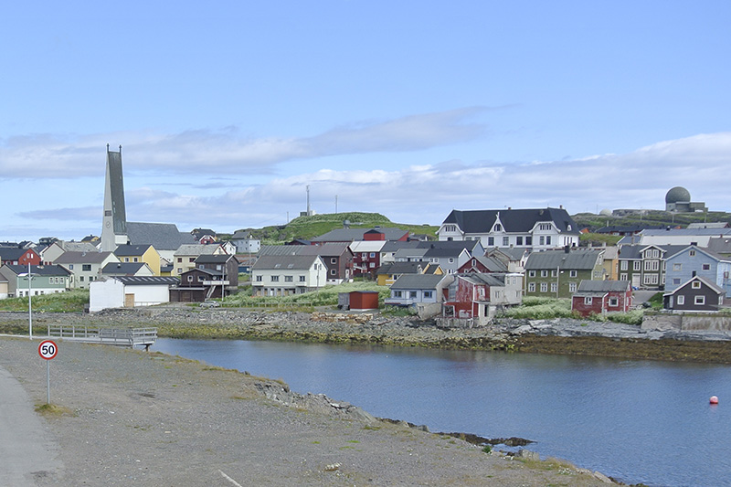
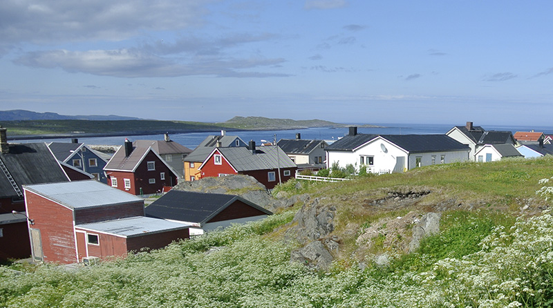
Место довольно далёкое от туристических троп: поблизости нет ни сногсшибательных видов на фьорды, ни умопомрачительных горных серпантинов, где можно здорово отжечь на моце. Из "стандартных" достопримечательностей можно упомянуть разве что крепость Вардёхус, из не очень стандартных — то, что на южном краю острова в конце 90-х построили радарную станцию, чтобы следить за космическим мусором.
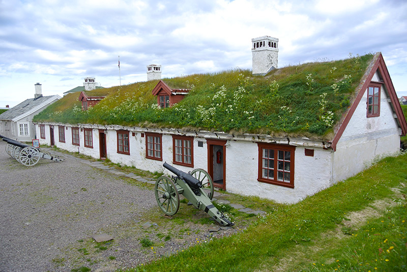
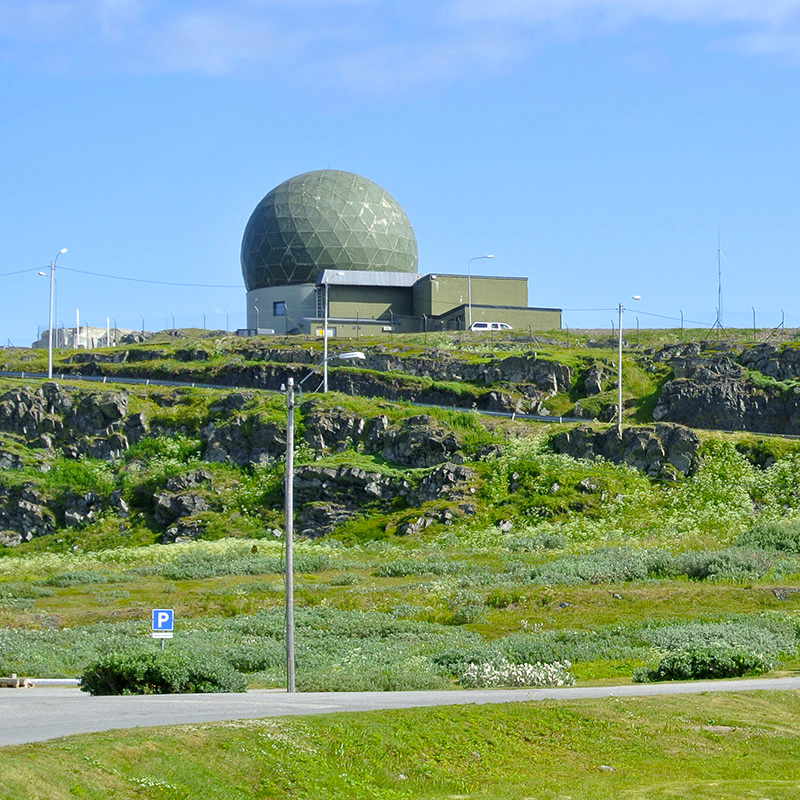
Меня привёл в этот город мемориал Стейлнесет, посвящённый памяти ведьм губернии Финнмарк (самая северная часть страны). Проект был завершён в 2011 году; это совместная работа всемирно известных художников Петера Цумтора и Луизы Буржуа. Место для постройки выбрано не случайно: в 1600-х годах Вардё стал центром охоты на ведьм в тогдашней Норвегии. Традиционными для инквизиции методами было убито больше сотни человек, и женщин, и мужчин. За что? А за колдовство.
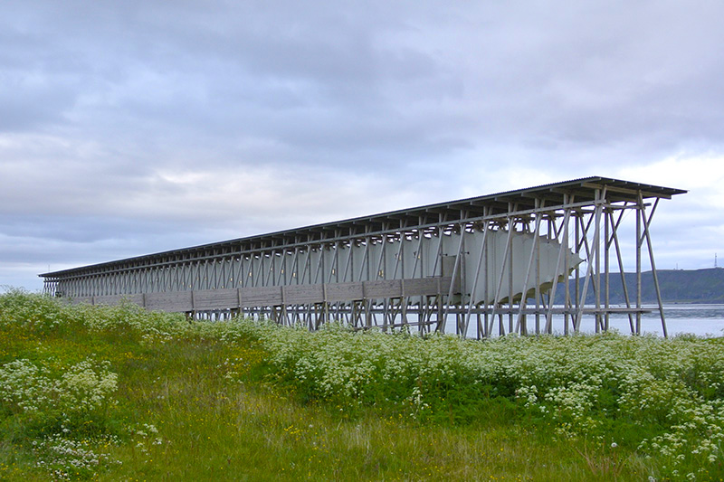
Мемориал состоит из двух частей. Сначала попадаешь, пройдя по мосткам, в подвешенный на тросах тканый кокон работы Цумтора...
Кокон пуст. Тёмный коридор длиной почти в 122 метра; только на стенах развешены тускло горящие лампочки. Их ровно девяносто одна штука. По числу помянутых. Под каждой лампочкой — крохотное оконце, амбразура во внешний мир, который, если честно, изнутри кокона кажется уже немножко чуждым. Других источников света нет. Возле окошек прикреплены чёрные таблички, рассказывающие коротенькую историю приговора к смерти. Классический пример: жила-была девочка, сосед пожаловался, что она ведьма. Попробовали аккуратненько попытать — девочка созналась, что научилась колдовству через хлеб, которым её угостила подружка. Попытали ещё немного — рассказала, что она целовала руку самому дьяволу, когда он её возил верхом на свинье на шабаш. Ещё чуть-чуть — оказывается, это она убила старика Гудмундссона, когда тот ушёл рыбачить на лодке пятого сентября прошлого года: смотрела ему вслед и махала платочком, а потом шторм поднялся. Кинули в воду — всплыла. Виновна в колдовстве. Извольте к нашему огоньку...
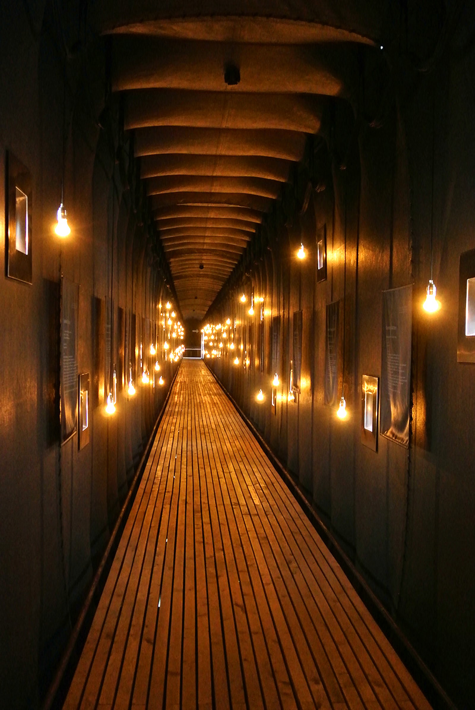
На первой-второй истории жмёшь плечами, удивляешься, усмехаешься над людской темнотой. К третьей понимаешь, как это чудовищно. Четвёртая, пятая и следующие таблички вызывают беспомощный, бессильный гнев. Только Боги ведают, что руководило людьми, которые доносили на своих же соотечественников — дремучая глупость? Чёрная зависть? Желание уничтожить что-то иное, непохожее на них? А может, дело просто в спорынье?.. Никто не знает.
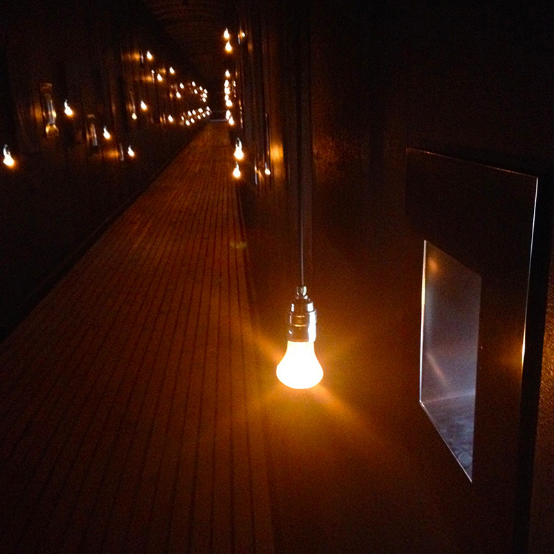
Медленно идёшь сквозь коридор, стараясь потише ступать по сосновым доскам пола; в груди щемит, а тихий свет ламп будто заглядывает к тебе в самую душу: не из тех ли ты, парень, кто выносил приговор, не из тех ли, кто сжигал на костре или выпытывал подноготную?
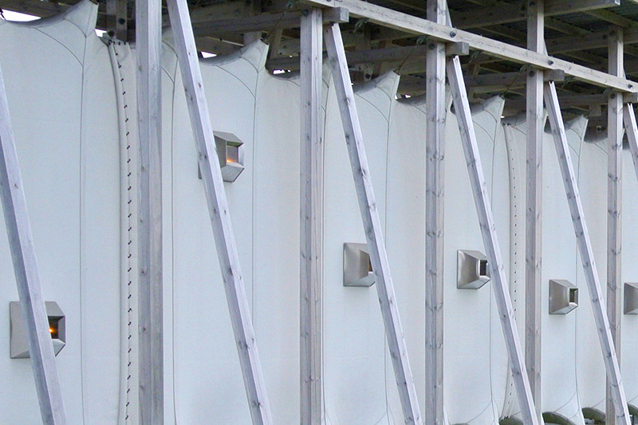
Выход из кокона — по таким же мосткам — ведёт к странному кубу дымчато-чёрного стекла. Это вторая часть мемориала, задумка Луизы Буржуа. И знаете, кокон ощутимо медитативен, горек, наводит на раздумья. А вот то, что внутри куба, раздирает душу в клочья. Огонь не всегда согревает...
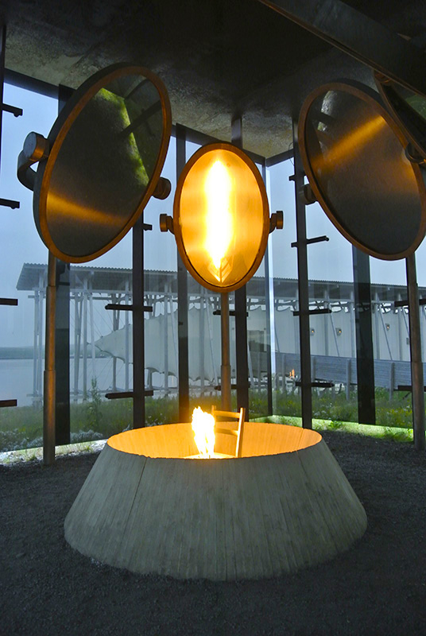
Внутри довольно тепло. Посреди куба горит вечный огонь — языки пламени красноречиво вырываются из сиденья железного стула. Вокруг стула закреплены овальные зеркала, в которых отражается то лживо искривлённое отражение посетителя, то яростный огненный столб.
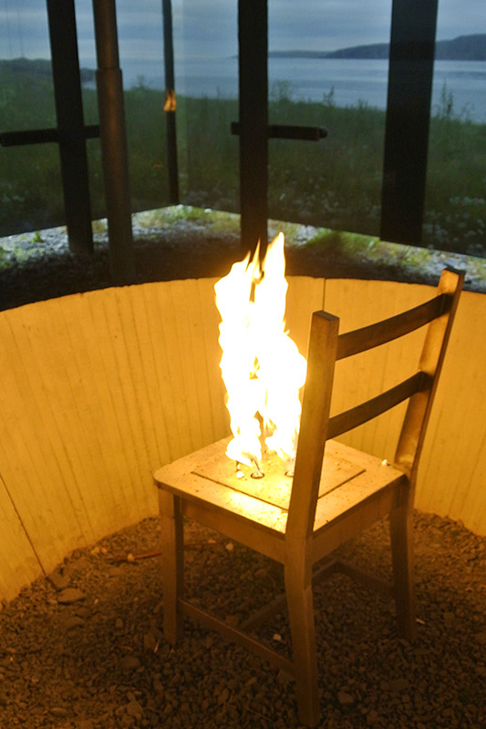
У меня прошло больше года с момента посещения мемориала, однако до сих пор при воспоминаниях в горле встаёт ком. Может, я стал стар и сентиментален, но знаете, печалит тот факт, что эта страница истории человечества, чёрт побери, и по сей день не перевёрнута.
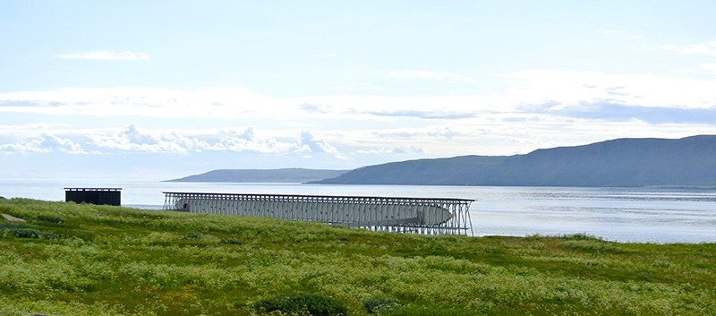